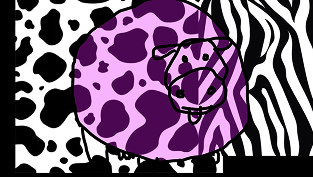

Amerihcc Licc: Bio-Ethics and Chimerical Metaphors

Amerihcc Licc explores genetic identity and bio-ethics through chimerical visual metaphors. This single-channel video installation utilizes projection mapping and generative patterns to flatten the visual boundaries between organic biomaterial and manufactured textiles, addressing questions of biological heritage and self-conception.
- Format: Video installation and projection mapping
- Context: TTTLabs, Crete, Greece, 2024